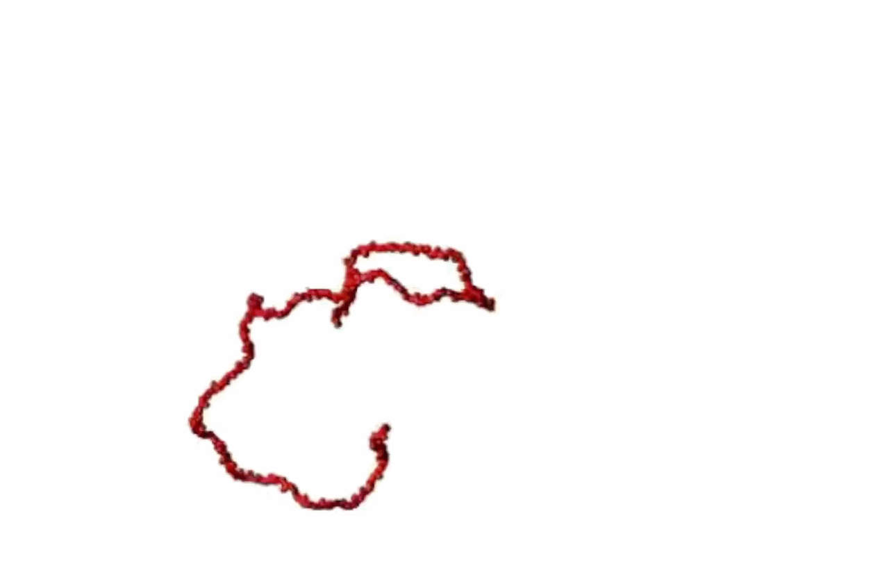

Research projects
Protein dynamics in realistic environments
Proteins do not operate in isolation. In living systems, they function within crowded, heterogeneous, and dynamically changing environments that profoundly influence their behavior. We investigate how these realistic conditions shape protein dynamics, interactions, and conformational landscapes. Using single-molecule fluorescence experiments, we directly observe how proteins move and fluctuate across different environments, from dilute solutions, complex assemblies such as biomolecular condensates, to cells. By connecting molecular-level observations with larger-scale behavior, we aim to understand how biological context governs protein function and dysfunction.


Protein behavior in out-of-equilibrium conditions
Many biological processes occur far from equilibrium, where energy consumption and active forces continuously drive molecular behavior. Under these conditions, proteins can access states and dynamics that are not observed at equilibrium. We investigate how out-of-equilibrium conditions influence protein behavior, focusing on their dynamics, interactions, and conformational changes. By combining single-molecule fluorescence experiments with controlled perturbations, we aim to directly observe how energy input reshapes molecular landscapes. This work is carried out in close interaction with collaborators working on non-equilibrium systems, bridging concepts from physics with biological function.